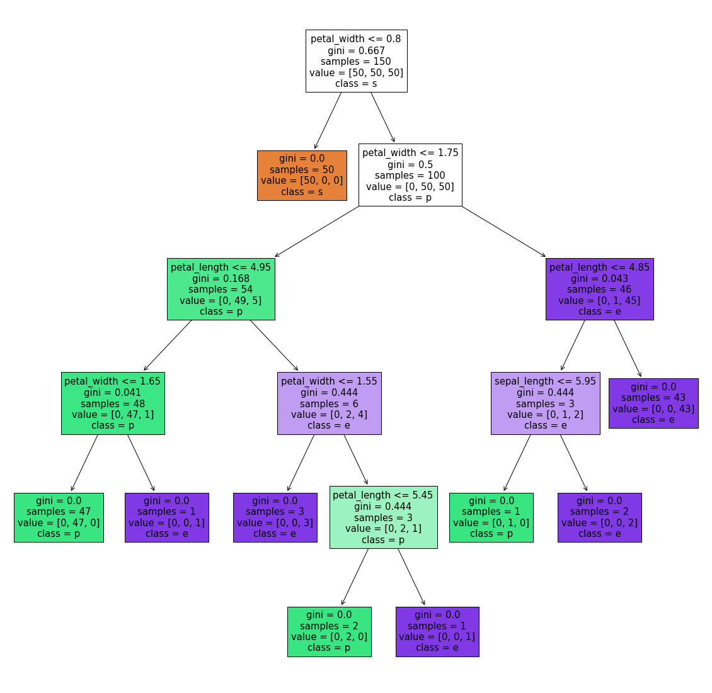

Tugas 1
Contents
Tugas 1#
import pandas as pd
dataset_url="https://raw.githubusercontent.com/ABDHanifAzhari/dataset/main/ds_salaries.csv"
data = pd.read_csv(dataset_url)
data
| Unnamed: 0 | work_year | experience_level | employment_type | job_title | salary | salary_currency | salary_in_usd | employee_residence | remote_ratio | company_location | company_size | |
|---|---|---|---|---|---|---|---|---|---|---|---|---|
| 0 | 0 | 2020 | MI | FT | Data Scientist | 70000 | EUR | 79833 | DE | 0 | DE | L |
| 1 | 1 | 2020 | SE | FT | Machine Learning Scientist | 260000 | USD | 260000 | JP | 0 | JP | S |
| 2 | 2 | 2020 | SE | FT | Big Data Engineer | 85000 | GBP | 109024 | GB | 50 | GB | M |
| 3 | 3 | 2020 | MI | FT | Product Data Analyst | 20000 | USD | 20000 | HN | 0 | HN | S |
| 4 | 4 | 2020 | SE | FT | Machine Learning Engineer | 150000 | USD | 150000 | US | 50 | US | L |
| ... | ... | ... | ... | ... | ... | ... | ... | ... | ... | ... | ... | ... |
| 602 | 602 | 2022 | SE | FT | Data Engineer | 154000 | USD | 154000 | US | 100 | US | M |
| 603 | 603 | 2022 | SE | FT | Data Engineer | 126000 | USD | 126000 | US | 100 | US | M |
| 604 | 604 | 2022 | SE | FT | Data Analyst | 129000 | USD | 129000 | US | 0 | US | M |
| 605 | 605 | 2022 | SE | FT | Data Analyst | 150000 | USD | 150000 | US | 100 | US | M |
| 606 | 606 | 2022 | MI | FT | AI Scientist | 200000 | USD | 200000 | IN | 100 | US | L |
607 rows × 12 columns
Tugas 2#
import pandas as pd
dataset_url="https://raw.githubusercontent.com/ABDHanifAzhari/dataset/main/IRIS.csv"
data2 = pd.read_csv(dataset_url)
data2
| sepal_length | sepal_width | petal_length | petal_width | species | |
|---|---|---|---|---|---|
| 0 | 5.1 | 3.5 | 1.4 | 0.2 | Iris-setosa |
| 1 | 4.9 | 3.0 | 1.4 | 0.2 | Iris-setosa |
| 2 | 4.7 | 3.2 | 1.3 | 0.2 | Iris-setosa |
| 3 | 4.6 | 3.1 | 1.5 | 0.2 | Iris-setosa |
| 4 | 5.0 | 3.6 | 1.4 | 0.2 | Iris-setosa |
| ... | ... | ... | ... | ... | ... |
| 145 | 6.7 | 3.0 | 5.2 | 2.3 | Iris-virginica |
| 146 | 6.3 | 2.5 | 5.0 | 1.9 | Iris-virginica |
| 147 | 6.5 | 3.0 | 5.2 | 2.0 | Iris-virginica |
| 148 | 6.2 | 3.4 | 5.4 | 2.3 | Iris-virginica |
| 149 | 5.9 | 3.0 | 5.1 | 1.8 | Iris-virginica |
150 rows × 5 columns
data2[["sepal_length"]].head(150)
| sepal_length | |
|---|---|
| 0 | 5.1 |
| 1 | 4.9 |
| 2 | 4.7 |
| 3 | 4.6 |
| 4 | 5.0 |
| ... | ... |
| 145 | 6.7 |
| 146 | 6.3 |
| 147 | 6.5 |
| 148 | 6.2 |
| 149 | 5.9 |
150 rows × 1 columns
max_sepal_length = max(data2["sepal_length"])
min_sepal_length = min(data2["sepal_length"])
print(max_sepal_length)
print(min_sepal_length)
7.9
4.3
def iris (max,min):
k=4
w=(max-min)/k
return (w)
iris(max_sepal_length,min_sepal_length)
0.9000000000000001
def rentang(i):
v = min_sepal_length + i*iris(max_sepal_length,min_sepal_length)
return (v)
print("nilai rentang 1 =",rentang(1))
print("nilai rentang 2 =",rentang(2))
print("nilai rentang 3 =",rentang(3))
print("nilai rentang 4 =",rentang(4))
nilai rentang 1 = 5.2
nilai rentang 2 = 6.1
nilai rentang 3 = 7.0
nilai rentang 4 = 7.9
for col in ["sepal_length"]:
nilai = data2[col]
def equal(nilai):
if nilai >= 4.3 and nilai < 5.2:
return "A"
elif nilai >= 5.2 and nilai < 6.1:
return "B"
elif nilai >= 6.1 and nilai < 7.0:
return "C"
elif nilai >= 7.0 and nilai <= 7.9:
return "D"
data2["sepal_length"]= nilai.apply(equal)
data2[["sepal_length"]].head(150)
| sepal_length | |
|---|---|
| 0 | A |
| 1 | A |
| 2 | A |
| 3 | A |
| 4 | A |
| ... | ... |
| 145 | C |
| 146 | C |
| 147 | C |
| 148 | C |
| 149 | B |
150 rows × 1 columns
Tugas 3#
import pandas as pd
import math
import matplotlib.pyplot as plt
from sklearn.datasets import load_iris
iris = load_iris()
type(iris)
sklearn.utils.Bunch
iris.data
array([[5.1, 3.5, 1.4, 0.2],
[4.9, 3. , 1.4, 0.2],
[4.7, 3.2, 1.3, 0.2],
[4.6, 3.1, 1.5, 0.2],
[5. , 3.6, 1.4, 0.2],
[5.4, 3.9, 1.7, 0.4],
[4.6, 3.4, 1.4, 0.3],
[5. , 3.4, 1.5, 0.2],
[4.4, 2.9, 1.4, 0.2],
[4.9, 3.1, 1.5, 0.1],
[5.4, 3.7, 1.5, 0.2],
[4.8, 3.4, 1.6, 0.2],
[4.8, 3. , 1.4, 0.1],
[4.3, 3. , 1.1, 0.1],
[5.8, 4. , 1.2, 0.2],
[5.7, 4.4, 1.5, 0.4],
[5.4, 3.9, 1.3, 0.4],
[5.1, 3.5, 1.4, 0.3],
[5.7, 3.8, 1.7, 0.3],
[5.1, 3.8, 1.5, 0.3],
[5.4, 3.4, 1.7, 0.2],
[5.1, 3.7, 1.5, 0.4],
[4.6, 3.6, 1. , 0.2],
[5.1, 3.3, 1.7, 0.5],
[4.8, 3.4, 1.9, 0.2],
[5. , 3. , 1.6, 0.2],
[5. , 3.4, 1.6, 0.4],
[5.2, 3.5, 1.5, 0.2],
[5.2, 3.4, 1.4, 0.2],
[4.7, 3.2, 1.6, 0.2],
[4.8, 3.1, 1.6, 0.2],
[5.4, 3.4, 1.5, 0.4],
[5.2, 4.1, 1.5, 0.1],
[5.5, 4.2, 1.4, 0.2],
[4.9, 3.1, 1.5, 0.2],
[5. , 3.2, 1.2, 0.2],
[5.5, 3.5, 1.3, 0.2],
[4.9, 3.6, 1.4, 0.1],
[4.4, 3. , 1.3, 0.2],
[5.1, 3.4, 1.5, 0.2],
[5. , 3.5, 1.3, 0.3],
[4.5, 2.3, 1.3, 0.3],
[4.4, 3.2, 1.3, 0.2],
[5. , 3.5, 1.6, 0.6],
[5.1, 3.8, 1.9, 0.4],
[4.8, 3. , 1.4, 0.3],
[5.1, 3.8, 1.6, 0.2],
[4.6, 3.2, 1.4, 0.2],
[5.3, 3.7, 1.5, 0.2],
[5. , 3.3, 1.4, 0.2],
[7. , 3.2, 4.7, 1.4],
[6.4, 3.2, 4.5, 1.5],
[6.9, 3.1, 4.9, 1.5],
[5.5, 2.3, 4. , 1.3],
[6.5, 2.8, 4.6, 1.5],
[5.7, 2.8, 4.5, 1.3],
[6.3, 3.3, 4.7, 1.6],
[4.9, 2.4, 3.3, 1. ],
[6.6, 2.9, 4.6, 1.3],
[5.2, 2.7, 3.9, 1.4],
[5. , 2. , 3.5, 1. ],
[5.9, 3. , 4.2, 1.5],
[6. , 2.2, 4. , 1. ],
[6.1, 2.9, 4.7, 1.4],
[5.6, 2.9, 3.6, 1.3],
[6.7, 3.1, 4.4, 1.4],
[5.6, 3. , 4.5, 1.5],
[5.8, 2.7, 4.1, 1. ],
[6.2, 2.2, 4.5, 1.5],
[5.6, 2.5, 3.9, 1.1],
[5.9, 3.2, 4.8, 1.8],
[6.1, 2.8, 4. , 1.3],
[6.3, 2.5, 4.9, 1.5],
[6.1, 2.8, 4.7, 1.2],
[6.4, 2.9, 4.3, 1.3],
[6.6, 3. , 4.4, 1.4],
[6.8, 2.8, 4.8, 1.4],
[6.7, 3. , 5. , 1.7],
[6. , 2.9, 4.5, 1.5],
[5.7, 2.6, 3.5, 1. ],
[5.5, 2.4, 3.8, 1.1],
[5.5, 2.4, 3.7, 1. ],
[5.8, 2.7, 3.9, 1.2],
[6. , 2.7, 5.1, 1.6],
[5.4, 3. , 4.5, 1.5],
[6. , 3.4, 4.5, 1.6],
[6.7, 3.1, 4.7, 1.5],
[6.3, 2.3, 4.4, 1.3],
[5.6, 3. , 4.1, 1.3],
[5.5, 2.5, 4. , 1.3],
[5.5, 2.6, 4.4, 1.2],
[6.1, 3. , 4.6, 1.4],
[5.8, 2.6, 4. , 1.2],
[5. , 2.3, 3.3, 1. ],
[5.6, 2.7, 4.2, 1.3],
[5.7, 3. , 4.2, 1.2],
[5.7, 2.9, 4.2, 1.3],
[6.2, 2.9, 4.3, 1.3],
[5.1, 2.5, 3. , 1.1],
[5.7, 2.8, 4.1, 1.3],
[6.3, 3.3, 6. , 2.5],
[5.8, 2.7, 5.1, 1.9],
[7.1, 3. , 5.9, 2.1],
[6.3, 2.9, 5.6, 1.8],
[6.5, 3. , 5.8, 2.2],
[7.6, 3. , 6.6, 2.1],
[4.9, 2.5, 4.5, 1.7],
[7.3, 2.9, 6.3, 1.8],
[6.7, 2.5, 5.8, 1.8],
[7.2, 3.6, 6.1, 2.5],
[6.5, 3.2, 5.1, 2. ],
[6.4, 2.7, 5.3, 1.9],
[6.8, 3. , 5.5, 2.1],
[5.7, 2.5, 5. , 2. ],
[5.8, 2.8, 5.1, 2.4],
[6.4, 3.2, 5.3, 2.3],
[6.5, 3. , 5.5, 1.8],
[7.7, 3.8, 6.7, 2.2],
[7.7, 2.6, 6.9, 2.3],
[6. , 2.2, 5. , 1.5],
[6.9, 3.2, 5.7, 2.3],
[5.6, 2.8, 4.9, 2. ],
[7.7, 2.8, 6.7, 2. ],
[6.3, 2.7, 4.9, 1.8],
[6.7, 3.3, 5.7, 2.1],
[7.2, 3.2, 6. , 1.8],
[6.2, 2.8, 4.8, 1.8],
[6.1, 3. , 4.9, 1.8],
[6.4, 2.8, 5.6, 2.1],
[7.2, 3. , 5.8, 1.6],
[7.4, 2.8, 6.1, 1.9],
[7.9, 3.8, 6.4, 2. ],
[6.4, 2.8, 5.6, 2.2],
[6.3, 2.8, 5.1, 1.5],
[6.1, 2.6, 5.6, 1.4],
[7.7, 3. , 6.1, 2.3],
[6.3, 3.4, 5.6, 2.4],
[6.4, 3.1, 5.5, 1.8],
[6. , 3. , 4.8, 1.8],
[6.9, 3.1, 5.4, 2.1],
[6.7, 3.1, 5.6, 2.4],
[6.9, 3.1, 5.1, 2.3],
[5.8, 2.7, 5.1, 1.9],
[6.8, 3.2, 5.9, 2.3],
[6.7, 3.3, 5.7, 2.5],
[6.7, 3. , 5.2, 2.3],
[6.3, 2.5, 5. , 1.9],
[6.5, 3. , 5.2, 2. ],
[6.2, 3.4, 5.4, 2.3],
[5.9, 3. , 5.1, 1.8]])
print(iris.feature_names)
['sepal length (cm)', 'sepal width (cm)', 'petal length (cm)', 'petal width (cm)']
print(iris.target)
[0 0 0 0 0 0 0 0 0 0 0 0 0 0 0 0 0 0 0 0 0 0 0 0 0 0 0 0 0 0 0 0 0 0 0 0 0
0 0 0 0 0 0 0 0 0 0 0 0 0 1 1 1 1 1 1 1 1 1 1 1 1 1 1 1 1 1 1 1 1 1 1 1 1
1 1 1 1 1 1 1 1 1 1 1 1 1 1 1 1 1 1 1 1 1 1 1 1 1 1 2 2 2 2 2 2 2 2 2 2 2
2 2 2 2 2 2 2 2 2 2 2 2 2 2 2 2 2 2 2 2 2 2 2 2 2 2 2 2 2 2 2 2 2 2 2 2 2
2 2]
print(iris.target_names)
['setosa' 'versicolor' 'virginica']
print(type(iris.data))
print(type(iris.target))
<class 'numpy.ndarray'>
<class 'numpy.ndarray'>
print(iris.data.shape)
(150, 4)
X = iris.data
y = iris.target
from sklearn.model_selection import train_test_split
X_train, X_test, y_train, y_test = train_test_split(X,y, test_size=0.2,random_state=4)
print(X_train.shape)
print(X_test.shape)
(120, 4)
(30, 4)
print(y_train.shape)
print(y_test.shape)
(120,)
(30,)
from sklearn.neighbors import KNeighborsClassifier
from sklearn import metrics
k_range = range(1,26)
scores = {}
scores_list =[]
for k in k_range:
knn = KNeighborsClassifier(n_neighbors=k)
knn.fit(X_train, y_train)
y_pred=knn.predict(X_test)
scores[k] = metrics.accuracy_score(y_test,y_pred)
scores_list.append(metrics.accuracy_score(y_test, y_pred))
%matplotlib inline
import matplotlib.pyplot as plt
plt.plot (k_range,scores_list)
plt.xlabel ('Value of K for KNN')
plt.ylabel ('Testing Accuracy')
Text(0, 0.5, 'Testing Accuracy')

knn = KNeighborsClassifier(n_neighbors=5)
knn.fit(X,y)
KNeighborsClassifier()
classes = {0 : 'setosa', 1 : 'versicolor', 2 : 'virginica'}
x_new = [[3,4,5,2],
[5,4,2,2]]
y_predict = knn.predict(x_new)
print(classes[y_predict[0]])
print(classes[y_predict[1]])
versicolor
setosa
Tugas 4#
dataset_url="https://raw.githubusercontent.com/ABDHanifAzhari/dataset/main/IRIS.csv"
data2 = pd.read_csv(dataset_url)
#Metrics
from sklearn.metrics import make_scorer, accuracy_score,precision_score
from sklearn.metrics import classification_report
from sklearn.metrics import confusion_matrix
from sklearn.metrics import accuracy_score ,precision_score,recall_score,f1_score
#Model Select
from sklearn.model_selection import KFold,train_test_split,cross_val_score
from sklearn.ensemble import RandomForestClassifier
from sklearn.model_selection import train_test_split
from sklearn.linear_model import LogisticRegression
from sklearn.ensemble import RandomForestClassifier
from sklearn import linear_model
from sklearn.linear_model import SGDClassifier
from sklearn.tree import DecisionTreeClassifier
from sklearn.neighbors import KNeighborsClassifier
from sklearn.svm import SVC, LinearSVC
from sklearn.naive_bayes import GaussianNB
X=data2.drop(columns=["species"])
y=data2.species
from sklearn.preprocessing import LabelEncoder
le = LabelEncoder()
y = le.fit_transform(y)
#Train and Test split
X_train,X_test,y_train,y_test = train_test_split(X,y,test_size=0.3,random_state=0)
X_train.shape,X_test.shape,y_train.shape,y_test.shape
((105, 4), (45, 4), (105,), (45,))
gaussian = GaussianNB()
gaussian.fit(X_train, y_train)
Y_pred = gaussian.predict(X_test)
accuracy_nb=round(accuracy_score(y_test,Y_pred)* 100, 2)
acc_gaussian = round(gaussian.score(X_train, y_train) * 100, 2)
cm = confusion_matrix(y_test, Y_pred)
accuracy = accuracy_score(y_test,Y_pred)
precision =precision_score(y_test, Y_pred,average='micro')
recall = recall_score(y_test, Y_pred,average='micro')
f1 = f1_score(y_test,Y_pred,average='micro')
print('Confusion matrix for Naive Bayes\n',cm)
print('accuracy_Naive Bayes: %.3f' %accuracy)
print('precision_Naive Bayes: %.3f' %precision)
print('recall_Naive Bayes: %.3f' %recall)
print('f1-score_Naive Bayes : %.3f' %f1)
Confusion matrix for Naive Bayes
[[16 0 0]
[ 0 18 0]
[ 0 0 11]]
accuracy_Naive Bayes: 1.000
precision_Naive Bayes: 1.000
recall_Naive Bayes: 1.000
f1-score_Naive Bayes : 1.000
Tugas 5#
import numpy as np # linear algebra
import pandas as pd # data processing, CSV file I/O (e.g. pd.read_csv)
import matplotlib.pyplot as plt # for data visualization
import seaborn as sns # for statistical data visualization
from sklearn.cluster import KMeans
from sklearn.preprocessing import LabelEncoder
dataset_url="https://raw.githubusercontent.com/ABDHanifAzhari/dataset/main/IRIS.csv"
data2 = pd.read_csv(dataset_url)
data2
| sepal_length | sepal_width | petal_length | petal_width | species | |
|---|---|---|---|---|---|
| 0 | 5.1 | 3.5 | 1.4 | 0.2 | Iris-setosa |
| 1 | 4.9 | 3.0 | 1.4 | 0.2 | Iris-setosa |
| 2 | 4.7 | 3.2 | 1.3 | 0.2 | Iris-setosa |
| 3 | 4.6 | 3.1 | 1.5 | 0.2 | Iris-setosa |
| 4 | 5.0 | 3.6 | 1.4 | 0.2 | Iris-setosa |
| ... | ... | ... | ... | ... | ... |
| 145 | 6.7 | 3.0 | 5.2 | 2.3 | Iris-virginica |
| 146 | 6.3 | 2.5 | 5.0 | 1.9 | Iris-virginica |
| 147 | 6.5 | 3.0 | 5.2 | 2.0 | Iris-virginica |
| 148 | 6.2 | 3.4 | 5.4 | 2.3 | Iris-virginica |
| 149 | 5.9 | 3.0 | 5.1 | 1.8 | Iris-virginica |
150 rows × 5 columns
Declare feature vector and target variable#
Convert categorical variable into integers
X = data2
y = data2["species"]
le = LabelEncoder()
X['species'] = le.fit_transform(X['species'])
y = le.transform(y)
y
array([0, 0, 0, 0, 0, 0, 0, 0, 0, 0, 0, 0, 0, 0, 0, 0, 0, 0, 0, 0, 0, 0,
0, 0, 0, 0, 0, 0, 0, 0, 0, 0, 0, 0, 0, 0, 0, 0, 0, 0, 0, 0, 0, 0,
0, 0, 0, 0, 0, 0, 1, 1, 1, 1, 1, 1, 1, 1, 1, 1, 1, 1, 1, 1, 1, 1,
1, 1, 1, 1, 1, 1, 1, 1, 1, 1, 1, 1, 1, 1, 1, 1, 1, 1, 1, 1, 1, 1,
1, 1, 1, 1, 1, 1, 1, 1, 1, 1, 1, 1, 2, 2, 2, 2, 2, 2, 2, 2, 2, 2,
2, 2, 2, 2, 2, 2, 2, 2, 2, 2, 2, 2, 2, 2, 2, 2, 2, 2, 2, 2, 2, 2,
2, 2, 2, 2, 2, 2, 2, 2, 2, 2, 2, 2, 2, 2, 2, 2, 2, 2])
X.head()
| sepal_length | sepal_width | petal_length | petal_width | species | |
|---|---|---|---|---|---|
| 0 | 5.1 | 3.5 | 1.4 | 0.2 | 0 |
| 1 | 4.9 | 3.0 | 1.4 | 0.2 | 0 |
| 2 | 4.7 | 3.2 | 1.3 | 0.2 | 0 |
| 3 | 4.6 | 3.1 | 1.5 | 0.2 | 0 |
| 4 | 5.0 | 3.6 | 1.4 | 0.2 | 0 |
Feature Scaling#
cols = X.columns
from sklearn.preprocessing import MinMaxScaler
ms = MinMaxScaler()
X = ms.fit_transform(X)
X = pd.DataFrame(X, columns=[cols])
X
| sepal_length | sepal_width | petal_length | petal_width | species | |
|---|---|---|---|---|---|
| 0 | 0.222222 | 0.625000 | 0.067797 | 0.041667 | 0.0 |
| 1 | 0.166667 | 0.416667 | 0.067797 | 0.041667 | 0.0 |
| 2 | 0.111111 | 0.500000 | 0.050847 | 0.041667 | 0.0 |
| 3 | 0.083333 | 0.458333 | 0.084746 | 0.041667 | 0.0 |
| 4 | 0.194444 | 0.666667 | 0.067797 | 0.041667 | 0.0 |
| ... | ... | ... | ... | ... | ... |
| 145 | 0.666667 | 0.416667 | 0.711864 | 0.916667 | 1.0 |
| 146 | 0.555556 | 0.208333 | 0.677966 | 0.750000 | 1.0 |
| 147 | 0.611111 | 0.416667 | 0.711864 | 0.791667 | 1.0 |
| 148 | 0.527778 | 0.583333 | 0.745763 | 0.916667 | 1.0 |
| 149 | 0.444444 | 0.416667 | 0.694915 | 0.708333 | 1.0 |
150 rows × 5 columns
Tugas 6#
import pandas as pd
import numpy as np
from sklearn.metrics import accuracy_score
from sklearn import tree
from matplotlib import pyplot as plt
dataset_url="https://raw.githubusercontent.com/ABDHanifAzhari/dataset/main/IRIS.csv"
data2 = pd.read_csv(dataset_url)
y = data2["species"]
X = data2.drop(columns=["species"])
clf = tree.DecisionTreeClassifier(criterion="gini")
clf = clf.fit(X, y)
fig = plt.figure(figsize=(20,20))
_ = tree.plot_tree(clf, feature_names=list(data2.columns.values)[:4], class_names=list(data2.columns.values)[4] ,filled=True)

Tugas 7#
import numpy as np
import pandas as pd
from sklearn.preprocessing import MinMaxScaler
from sklearn.preprocessing import OneHotEncoder
from sklearn import preprocessing
dataset_url="https://raw.githubusercontent.com/ABDHanifAzhari/dataset/main/credit_score.csv"
data3 = pd.read_csv(dataset_url)
data3
| Unnamed: 0 | kode_kontrak | pendapatan_setahun_juta | kpr_aktif | durasi_pinjaman_bulan | jumlah_tanggungan | rata_rata_overdue | risk_rating | |
|---|---|---|---|---|---|---|---|---|
| 0 | 1 | AGR-000001 | 295 | YA | 48 | 5 | 61 - 90 days | 4 |
| 1 | 2 | AGR-000011 | 271 | YA | 36 | 5 | 61 - 90 days | 4 |
| 2 | 3 | AGR-000030 | 159 | TIDAK | 12 | 0 | 0 - 30 days | 1 |
| 3 | 4 | AGR-000043 | 210 | YA | 12 | 3 | 46 - 60 days | 3 |
| 4 | 5 | AGR-000049 | 165 | TIDAK | 36 | 0 | 31 - 45 days | 2 |
| ... | ... | ... | ... | ... | ... | ... | ... | ... |
| 895 | 896 | AGR-010739 | 112 | YA | 48 | 5 | > 90 days | 5 |
| 896 | 897 | AGR-010744 | 120 | YA | 48 | 2 | 46 - 60 days | 3 |
| 897 | 898 | AGR-010758 | 166 | TIDAK | 24 | 2 | 0 - 30 days | 1 |
| 898 | 899 | AGR-010775 | 196 | TIDAK | 48 | 0 | 31 - 45 days | 2 |
| 899 | 900 | AGR-010790 | 204 | TIDAK | 24 | 2 | 0 - 30 days | 1 |
900 rows × 8 columns
data3.head()
dataAsli = data3.drop(columns=['kpr_aktif', 'rata_rata_overdue'])
data2 = data3[["kpr_aktif"]]
data2.head(25)
| kpr_aktif | |
|---|---|
| 0 | YA |
| 1 | YA |
| 2 | TIDAK |
| 3 | YA |
| 4 | TIDAK |
| 5 | TIDAK |
| 6 | TIDAK |
| 7 | TIDAK |
| 8 | TIDAK |
| 9 | TIDAK |
| 10 | TIDAK |
| 11 | TIDAK |
| 12 | TIDAK |
| 13 | TIDAK |
| 14 | TIDAK |
| 15 | TIDAK |
| 16 | YA |
| 17 | TIDAK |
| 18 | TIDAK |
| 19 | TIDAK |
| 20 | TIDAK |
| 21 | TIDAK |
| 22 | TIDAK |
| 23 | TIDAK |
| 24 | TIDAK |
aktif = pd.get_dummies(data2)
data4 = data3[["rata_rata_overdue"]]
data3.head(25)
| Unnamed: 0 | kode_kontrak | pendapatan_setahun_juta | kpr_aktif | durasi_pinjaman_bulan | jumlah_tanggungan | rata_rata_overdue | risk_rating | |
|---|---|---|---|---|---|---|---|---|
| 0 | 1 | AGR-000001 | 295 | YA | 48 | 5 | 61 - 90 days | 4 |
| 1 | 2 | AGR-000011 | 271 | YA | 36 | 5 | 61 - 90 days | 4 |
| 2 | 3 | AGR-000030 | 159 | TIDAK | 12 | 0 | 0 - 30 days | 1 |
| 3 | 4 | AGR-000043 | 210 | YA | 12 | 3 | 46 - 60 days | 3 |
| 4 | 5 | AGR-000049 | 165 | TIDAK | 36 | 0 | 31 - 45 days | 2 |
| 5 | 6 | AGR-000063 | 220 | TIDAK | 24 | 5 | 0 - 30 days | 1 |
| 6 | 7 | AGR-000068 | 70 | TIDAK | 36 | 3 | 31 - 45 days | 2 |
| 7 | 8 | AGR-000075 | 88 | TIDAK | 48 | 3 | 31 - 45 days | 2 |
| 8 | 9 | AGR-000081 | 163 | TIDAK | 48 | 5 | 31 - 45 days | 2 |
| 9 | 10 | AGR-000094 | 100 | TIDAK | 36 | 6 | 31 - 45 days | 2 |
| 10 | 11 | AGR-000110 | 166 | TIDAK | 12 | 0 | 31 - 45 days | 2 |
| 11 | 12 | AGR-000127 | 163 | TIDAK | 36 | 0 | 31 - 45 days | 2 |
| 12 | 13 | AGR-000136 | 162 | TIDAK | 48 | 5 | 31 - 45 days | 2 |
| 13 | 14 | AGR-000142 | 198 | TIDAK | 36 | 4 | 31 - 45 days | 2 |
| 14 | 15 | AGR-000148 | 116 | TIDAK | 36 | 4 | 31 - 45 days | 2 |
| 15 | 16 | AGR-000158 | 90 | TIDAK | 36 | 3 | 31 - 45 days | 2 |
| 16 | 17 | AGR-000173 | 167 | YA | 36 | 3 | 0 - 30 days | 1 |
| 17 | 18 | AGR-000186 | 208 | TIDAK | 36 | 0 | 0 - 30 days | 1 |
| 18 | 19 | AGR-000192 | 121 | TIDAK | 12 | 0 | 0 - 30 days | 1 |
| 19 | 20 | AGR-000203 | 162 | TIDAK | 48 | 0 | 31 - 45 days | 2 |
| 20 | 21 | AGR-000211 | 166 | TIDAK | 24 | 5 | 31 - 45 days | 2 |
| 21 | 22 | AGR-000224 | 84 | TIDAK | 12 | 3 | 31 - 45 days | 2 |
| 22 | 23 | AGR-000240 | 156 | TIDAK | 24 | 4 | 0 - 30 days | 1 |
| 23 | 24 | AGR-000247 | 184 | TIDAK | 24 | 6 | 0 - 30 days | 1 |
| 24 | 25 | AGR-000262 | 166 | TIDAK | 12 | 0 | 0 - 30 days | 1 |
rata = pd.get_dummies(data4)
dataOlah = pd.concat([aktif, rata], axis=1)
dataHasil = pd.concat([dataAsli, dataOlah], axis=1)
dataHasil
| Unnamed: 0 | kode_kontrak | pendapatan_setahun_juta | durasi_pinjaman_bulan | jumlah_tanggungan | risk_rating | kpr_aktif_TIDAK | kpr_aktif_YA | rata_rata_overdue_0 - 30 days | rata_rata_overdue_31 - 45 days | rata_rata_overdue_46 - 60 days | rata_rata_overdue_61 - 90 days | rata_rata_overdue_> 90 days | |
|---|---|---|---|---|---|---|---|---|---|---|---|---|---|
| 0 | 1 | AGR-000001 | 295 | 48 | 5 | 4 | 0 | 1 | 0 | 0 | 0 | 1 | 0 |
| 1 | 2 | AGR-000011 | 271 | 36 | 5 | 4 | 0 | 1 | 0 | 0 | 0 | 1 | 0 |
| 2 | 3 | AGR-000030 | 159 | 12 | 0 | 1 | 1 | 0 | 1 | 0 | 0 | 0 | 0 |
| 3 | 4 | AGR-000043 | 210 | 12 | 3 | 3 | 0 | 1 | 0 | 0 | 1 | 0 | 0 |
| 4 | 5 | AGR-000049 | 165 | 36 | 0 | 2 | 1 | 0 | 0 | 1 | 0 | 0 | 0 |
| ... | ... | ... | ... | ... | ... | ... | ... | ... | ... | ... | ... | ... | ... |
| 895 | 896 | AGR-010739 | 112 | 48 | 5 | 5 | 0 | 1 | 0 | 0 | 0 | 0 | 1 |
| 896 | 897 | AGR-010744 | 120 | 48 | 2 | 3 | 0 | 1 | 0 | 0 | 1 | 0 | 0 |
| 897 | 898 | AGR-010758 | 166 | 24 | 2 | 1 | 1 | 0 | 1 | 0 | 0 | 0 | 0 |
| 898 | 899 | AGR-010775 | 196 | 48 | 0 | 2 | 1 | 0 | 0 | 1 | 0 | 0 | 0 |
| 899 | 900 | AGR-010790 | 204 | 24 | 2 | 1 | 1 | 0 | 1 | 0 | 0 | 0 | 0 |
900 rows × 13 columns
Normalisasi#
\[x'=\frac{x-xmin}{xmax-xmin}{(newMax-newMin)+newMin}\]
dataBaru = dataHasil.drop(columns=['kode_kontrak', 'risk_rating'])
dataBaru
| Unnamed: 0 | pendapatan_setahun_juta | durasi_pinjaman_bulan | jumlah_tanggungan | kpr_aktif_TIDAK | kpr_aktif_YA | rata_rata_overdue_0 - 30 days | rata_rata_overdue_31 - 45 days | rata_rata_overdue_46 - 60 days | rata_rata_overdue_61 - 90 days | rata_rata_overdue_> 90 days | |
|---|---|---|---|---|---|---|---|---|---|---|---|
| 0 | 1 | 295 | 48 | 5 | 0 | 1 | 0 | 0 | 0 | 1 | 0 |
| 1 | 2 | 271 | 36 | 5 | 0 | 1 | 0 | 0 | 0 | 1 | 0 |
| 2 | 3 | 159 | 12 | 0 | 1 | 0 | 1 | 0 | 0 | 0 | 0 |
| 3 | 4 | 210 | 12 | 3 | 0 | 1 | 0 | 0 | 1 | 0 | 0 |
| 4 | 5 | 165 | 36 | 0 | 1 | 0 | 0 | 1 | 0 | 0 | 0 |
| ... | ... | ... | ... | ... | ... | ... | ... | ... | ... | ... | ... |
| 895 | 896 | 112 | 48 | 5 | 0 | 1 | 0 | 0 | 0 | 0 | 1 |
| 896 | 897 | 120 | 48 | 2 | 0 | 1 | 0 | 0 | 1 | 0 | 0 |
| 897 | 898 | 166 | 24 | 2 | 1 | 0 | 1 | 0 | 0 | 0 | 0 |
| 898 | 899 | 196 | 48 | 0 | 1 | 0 | 0 | 1 | 0 | 0 | 0 |
| 899 | 900 | 204 | 24 | 2 | 1 | 0 | 1 | 0 | 0 | 0 | 0 |
900 rows × 11 columns
#mengubah data menjadi array
x = dataBaru.iloc[:, [1, 2, 3,4,5,6,7,8,9,10]].values
x
array([[295, 48, 5, ..., 0, 1, 0],
[271, 36, 5, ..., 0, 1, 0],
[159, 12, 0, ..., 0, 0, 0],
...,
[166, 24, 2, ..., 0, 0, 0],
[196, 48, 0, ..., 0, 0, 0],
[204, 24, 2, ..., 0, 0, 0]])
scaler = MinMaxScaler()
print(scaler.fit(dataBaru))
MinMaxScaler()
#mencari nilai maximum
print(scaler.data_max_)
[900. 300. 48. 6. 1. 1. 1. 1. 1. 1. 1.]
dataBaru2 = scaler.transform(dataBaru)
dataBaru2
array([[0. , 0.97826087, 1. , ..., 0. , 1. ,
0. ],
[0.00111235, 0.87391304, 0.66666667, ..., 0. , 1. ,
0. ],
[0.00222469, 0.38695652, 0. , ..., 0. , 0. ,
0. ],
...,
[0.99777531, 0.4173913 , 0.33333333, ..., 0. , 0. ,
0. ],
[0.99888765, 0.54782609, 1. , ..., 0. , 0. ,
0. ],
[1. , 0.5826087 , 0.33333333, ..., 0. , 0. ,
0. ]])
#mengcopy judul colom
features_names = dataBaru.columns.copy()
#merubah array menjadi tabel
scaled_features = pd.DataFrame(dataBaru2, columns=features_names)
scaled_features
| Unnamed: 0 | pendapatan_setahun_juta | durasi_pinjaman_bulan | jumlah_tanggungan | kpr_aktif_TIDAK | kpr_aktif_YA | rata_rata_overdue_0 - 30 days | rata_rata_overdue_31 - 45 days | rata_rata_overdue_46 - 60 days | rata_rata_overdue_61 - 90 days | rata_rata_overdue_> 90 days | |
|---|---|---|---|---|---|---|---|---|---|---|---|
| 0 | 0.000000 | 0.978261 | 1.000000 | 0.833333 | 0.0 | 1.0 | 0.0 | 0.0 | 0.0 | 1.0 | 0.0 |
| 1 | 0.001112 | 0.873913 | 0.666667 | 0.833333 | 0.0 | 1.0 | 0.0 | 0.0 | 0.0 | 1.0 | 0.0 |
| 2 | 0.002225 | 0.386957 | 0.000000 | 0.000000 | 1.0 | 0.0 | 1.0 | 0.0 | 0.0 | 0.0 | 0.0 |
| 3 | 0.003337 | 0.608696 | 0.000000 | 0.500000 | 0.0 | 1.0 | 0.0 | 0.0 | 1.0 | 0.0 | 0.0 |
| 4 | 0.004449 | 0.413043 | 0.666667 | 0.000000 | 1.0 | 0.0 | 0.0 | 1.0 | 0.0 | 0.0 | 0.0 |
| ... | ... | ... | ... | ... | ... | ... | ... | ... | ... | ... | ... |
| 895 | 0.995551 | 0.182609 | 1.000000 | 0.833333 | 0.0 | 1.0 | 0.0 | 0.0 | 0.0 | 0.0 | 1.0 |
| 896 | 0.996663 | 0.217391 | 1.000000 | 0.333333 | 0.0 | 1.0 | 0.0 | 0.0 | 1.0 | 0.0 | 0.0 |
| 897 | 0.997775 | 0.417391 | 0.333333 | 0.333333 | 1.0 | 0.0 | 1.0 | 0.0 | 0.0 | 0.0 | 0.0 |
| 898 | 0.998888 | 0.547826 | 1.000000 | 0.000000 | 1.0 | 0.0 | 0.0 | 1.0 | 0.0 | 0.0 | 0.0 |
| 899 | 1.000000 | 0.582609 | 0.333333 | 0.333333 | 1.0 | 0.0 | 1.0 | 0.0 | 0.0 | 0.0 | 0.0 |
900 rows × 11 columns
# Min Max Scale dengan Min = 1 dan Max =2
scaler = MinMaxScaler(feature_range=(1,2))
model =scaler.fit(dataBaru2)
scaled_data=model.transform(dataBaru2)
# print scaled features
print(scaled_data)
[[1. 1.97826087 2. ... 1. 2. 1. ]
[1.00111235 1.87391304 1.66666667 ... 1. 2. 1. ]
[1.00222469 1.38695652 1. ... 1. 1. 1. ]
...
[1.99777531 1.4173913 1.33333333 ... 1. 1. 1. ]
[1.99888765 1.54782609 2. ... 1. 1. 1. ]
[2. 1.5826087 1.33333333 ... 1. 1. 1. ]]
dataMinMax = pd.DataFrame(scaled_data, columns=dataBaru.columns.values)
dataMinMax
| Unnamed: 0 | pendapatan_setahun_juta | durasi_pinjaman_bulan | jumlah_tanggungan | kpr_aktif_TIDAK | kpr_aktif_YA | rata_rata_overdue_0 - 30 days | rata_rata_overdue_31 - 45 days | rata_rata_overdue_46 - 60 days | rata_rata_overdue_61 - 90 days | rata_rata_overdue_> 90 days | |
|---|---|---|---|---|---|---|---|---|---|---|---|
| 0 | 1.000000 | 1.978261 | 2.000000 | 1.833333 | 1.0 | 2.0 | 1.0 | 1.0 | 1.0 | 2.0 | 1.0 |
| 1 | 1.001112 | 1.873913 | 1.666667 | 1.833333 | 1.0 | 2.0 | 1.0 | 1.0 | 1.0 | 2.0 | 1.0 |
| 2 | 1.002225 | 1.386957 | 1.000000 | 1.000000 | 2.0 | 1.0 | 2.0 | 1.0 | 1.0 | 1.0 | 1.0 |
| 3 | 1.003337 | 1.608696 | 1.000000 | 1.500000 | 1.0 | 2.0 | 1.0 | 1.0 | 2.0 | 1.0 | 1.0 |
| 4 | 1.004449 | 1.413043 | 1.666667 | 1.000000 | 2.0 | 1.0 | 1.0 | 2.0 | 1.0 | 1.0 | 1.0 |
| ... | ... | ... | ... | ... | ... | ... | ... | ... | ... | ... | ... |
| 895 | 1.995551 | 1.182609 | 2.000000 | 1.833333 | 1.0 | 2.0 | 1.0 | 1.0 | 1.0 | 1.0 | 2.0 |
| 896 | 1.996663 | 1.217391 | 2.000000 | 1.333333 | 1.0 | 2.0 | 1.0 | 1.0 | 2.0 | 1.0 | 1.0 |
| 897 | 1.997775 | 1.417391 | 1.333333 | 1.333333 | 2.0 | 1.0 | 2.0 | 1.0 | 1.0 | 1.0 | 1.0 |
| 898 | 1.998888 | 1.547826 | 2.000000 | 1.000000 | 2.0 | 1.0 | 1.0 | 2.0 | 1.0 | 1.0 | 1.0 |
| 899 | 2.000000 | 1.582609 | 1.333333 | 1.333333 | 2.0 | 1.0 | 2.0 | 1.0 | 1.0 | 1.0 | 1.0 |
900 rows × 11 columns
# Z Score atau StandardScaler
from sklearn.preprocessing import StandardScaler
scaler = StandardScaler()
model = (scaler.fit(dataBaru))
data_mean = (scaler.mean_)
scale_data2 = (scaler.transform(dataBaru))
print(scale_data2)
[[-1.73012737 2.54041987 1.32217147 ... -0.6912543 2.54950976
-0.35949218]
[-1.72627837 2.07740679 0.4439764 ... -0.6912543 2.54950976
-0.35949218]
[-1.72242937 -0.08332092 -1.31241375 ... -0.6912543 -0.39223227
-0.35949218]
...
[ 1.72242937 0.05172456 -0.43421867 ... -0.6912543 -0.39223227
-0.35949218]
[ 1.72627837 0.63049091 1.32217147 ... -0.6912543 -0.39223227
-0.35949218]
[ 1.73012737 0.78482861 -0.43421867 ... -0.6912543 -0.39223227
-0.35949218]]
dataZScale = pd.DataFrame(scale_data2, columns=dataBaru.columns.values)
dataZScale
| Unnamed: 0 | pendapatan_setahun_juta | durasi_pinjaman_bulan | jumlah_tanggungan | kpr_aktif_TIDAK | kpr_aktif_YA | rata_rata_overdue_0 - 30 days | rata_rata_overdue_31 - 45 days | rata_rata_overdue_46 - 60 days | rata_rata_overdue_61 - 90 days | rata_rata_overdue_> 90 days | |
|---|---|---|---|---|---|---|---|---|---|---|---|
| 0 | -1.730127 | 2.540420 | 1.322171 | 1.030621 | -0.868554 | 0.868554 | -0.580772 | -0.463222 | -0.691254 | 2.549510 | -0.359492 |
| 1 | -1.726278 | 2.077407 | 0.443976 | 1.030621 | -0.868554 | 0.868554 | -0.580772 | -0.463222 | -0.691254 | 2.549510 | -0.359492 |
| 2 | -1.722429 | -0.083321 | -1.312414 | -1.461477 | 1.151339 | -1.151339 | 1.721847 | -0.463222 | -0.691254 | -0.392232 | -0.359492 |
| 3 | -1.718580 | 0.900582 | -1.312414 | 0.033782 | -0.868554 | 0.868554 | -0.580772 | -0.463222 | 1.446646 | -0.392232 | -0.359492 |
| 4 | -1.714731 | 0.032432 | 0.443976 | -1.461477 | 1.151339 | -1.151339 | -0.580772 | 2.158791 | -0.691254 | -0.392232 | -0.359492 |
| ... | ... | ... | ... | ... | ... | ... | ... | ... | ... | ... | ... |
| 895 | 1.714731 | -0.990055 | 1.322171 | 1.030621 | -0.868554 | 0.868554 | -0.580772 | -0.463222 | -0.691254 | -0.392232 | 2.781702 |
| 896 | 1.718580 | -0.835717 | 1.322171 | -0.464638 | -0.868554 | 0.868554 | -0.580772 | -0.463222 | 1.446646 | -0.392232 | -0.359492 |
| 897 | 1.722429 | 0.051725 | -0.434219 | -0.464638 | 1.151339 | -1.151339 | 1.721847 | -0.463222 | -0.691254 | -0.392232 | -0.359492 |
| 898 | 1.726278 | 0.630491 | 1.322171 | -1.461477 | 1.151339 | -1.151339 | -0.580772 | 2.158791 | -0.691254 | -0.392232 | -0.359492 |
| 899 | 1.730127 | 0.784829 | -0.434219 | -0.464638 | 1.151339 | -1.151339 | 1.721847 | -0.463222 | -0.691254 | -0.392232 | -0.359492 |
900 rows × 11 columns
Hitung data dengan metode KNN#
# Memisahkan dataset dalam variabel independen dan dependen
X = dataMinMax.iloc[:,:11].values #data
y = dataHasil['risk_rating'].values #target
from sklearn.model_selection import train_test_split
X_train,X_test,y_train,y_test = train_test_split(X,y,test_size=0.2,random_state=4)
print(X_train.shape)
print(X_test.shape)
(720, 11)
(180, 11)
print(y_train.shape)
print(y_test.shape)
(720,)
(180,)
from sklearn.neighbors import KNeighborsClassifier
from sklearn import metrics
k_range = range(1,26)
scores = {}
scores_list = []
for k in k_range:
knn = KNeighborsClassifier(n_neighbors=k)
knn.fit(X_train,y_train)
y_pred = knn.predict(X_test)
scores[k] = metrics.accuracy_score(y_test,y_pred)
scores_list.append(metrics.accuracy_score(y_test,y_pred))
%matplotlib inline
import matplotlib.pyplot as plt
#plot the relationship between K and the testing accuracy
plt.plot(k_range,scores_list)
plt.xlabel('Value of K for KKN')
plt.ylabel('Testing Accuracy')
Text(0, 0.5, 'Testing Accuracy')
knn = KNeighborsClassifier(n_neighbors=5)
knn.fit(X,y)
KNeighborsClassifier()
classes = {0:'1',1:'2',2:'3', 3:'4', 4:'5'}
x_new = [[0,0,0,0,0,0,0,0,0,0,0],[1,1,1,1,0,1,0,0,1,1,0]]
y_predict = knn.predict(x_new)
print(classes[y_predict[0]])
print(classes[y_predict[1]])
3
4
Hitung data dengan metode Naive Bayes#
# Memisahkan dataset dalam variabel independen dan dependen
X = dataMinMax.iloc[:,:11].values
y = dataHasil['risk_rating'].values
# Memisahkan dataset menjadi Training set dan Test set
from sklearn.model_selection import train_test_split
X_train, X_test, y_train, y_test = train_test_split(X, y, test_size = 0.20, random_state = 82)
# Fitur Scaling untuk membawa variabel dalam satu skala
from sklearn.preprocessing import StandardScaler
sc = StandardScaler()
X_train_nb = sc.fit_transform(X_train)
X_test_nb = sc.transform(X_test)
# Memasang Klasifikasi Naive Bayes ke set Pelatihan dengan kernel linier
from sklearn.naive_bayes import GaussianNB
nvclassifier = GaussianNB()
nvclassifier.fit(X_train, y_train)
GaussianNB()
# Memprediksi hasil set Tes
y_pred = nvclassifier.predict(X_test)
print(y_pred)
[3 3 5 3 1 3 4 3 3 2 3 3 1 1 3 5 1 1 1 2 4 1 3 1 3 5 2 1 2 4 2 1 2 4 4 3 3
4 1 1 2 3 1 1 1 1 2 3 2 5 3 4 2 3 1 4 5 3 1 2 3 2 1 2 3 1 3 2 4 1 5 5 2 2
1 3 1 3 1 5 2 1 3 4 1 3 1 4 2 1 1 5 4 2 1 3 2 3 4 3 3 2 2 4 2 3 5 4 3 4 2
3 1 1 1 4 3 4 3 2 1 1 2 5 3 2 1 3 3 1 1 5 1 2 3 2 5 3 3 1 1 5 4 2 4 4 4 3
3 2 2 3 3 4 5 3 1 3 1 1 3 2 5 4 2 5 1 2 3 1 3 3 3 4 2 4 1 4 1 4]
# melihat nilai aktual dan prediksi berdampingan
y_compare = np.vstack((y_test,y_pred)).T
# nilai aktual di sisi kiri dan nilai prediksi di sisi kanan
# mencetak 5 nilai teratas
y_compare[:5,:]
array([[3, 3],
[3, 3],
[5, 5],
[3, 3],
[1, 1]])
# Membuat Matriks confusion
from sklearn.metrics import confusion_matrix
cm = confusion_matrix(y_test, y_pred)
print(cm)
[[48 0 0 0 0]
[ 0 36 0 0 0]
[ 0 0 51 0 0]
[ 0 0 0 28 0]
[ 0 0 0 0 17]]
# menemukan akurasi dari matriks confusion
a = cm.shape
corrPred = 0
falsePred = 0
for row in range(a[0]):
for c in range(a[1]):
if row == c:
corrPred +=cm[row,c]
else:
falsePred += cm[row,c]
print('Correct predictions: ', corrPred)
print('False predictions', falsePred)
print ('\n\nAccuracy of the Naive Bayes Clasification is: ', corrPred/(cm.sum()))
Correct predictions: 180
False predictions 0
Accuracy of the Naive Bayes Clasification is: 1.0
Tugas 8#
Esemble Learning#
Bagging#
# Import library yang diperlukan
from sklearn.ensemble import BaggingClassifier
from sklearn.neighbors import KNeighborsClassifier
from sklearn.tree import DecisionTreeClassifier
from sklearn.metrics import accuracy_score ,precision_score,recall_score,f1_score
# Memisahkan dataset dalam variabel independen dan dependen
X = dataMinMax.iloc[:,:11].values
y = dataHasil['risk_rating'].values
# Memisahkan dataset menjadi Training set dan Test set
from sklearn.model_selection import train_test_split
X_train, X_test, y_train, y_test = train_test_split(X, y, test_size = 0.20, random_state = 82)
clf = BaggingClassifier(base_estimator=DecisionTreeClassifier(),n_estimators=10, random_state=0).fit(X_train, y_train)
rsb = clf.predict(X_test)
b = ['Decision Tree']
Tree = pd.DataFrame(rsb,columns = b)
X_test.shape
(180, 11)
K = 10
clf = BaggingClassifier(base_estimator=KNeighborsClassifier(n_neighbors = K),n_estimators=10, random_state=0).fit(X_train, y_train)
rsa = clf.predict(X_test)
a = ['KNN']
KNN = pd.DataFrame(rsa,columns = a)
clf = BaggingClassifier(base_estimator=GaussianNB(),n_estimators=10, random_state=0).fit(X_train, y_train)
rsc = clf.predict(X_test)
c = ['Naive Bayes']
Bayes = pd.DataFrame(rsc,columns = c)
Result = pd.concat([Tree, KNN,Bayes], axis=1)
Result
| Decision Tree | KNN | Naive Bayes | |
|---|---|---|---|
| 0 | 3 | 3 | 3 |
| 1 | 3 | 3 | 3 |
| 2 | 5 | 5 | 5 |
| 3 | 3 | 3 | 3 |
| 4 | 1 | 1 | 1 |
| ... | ... | ... | ... |
| 175 | 4 | 4 | 4 |
| 176 | 1 | 1 | 1 |
| 177 | 4 | 4 | 4 |
| 178 | 1 | 1 | 1 |
| 179 | 4 | 4 | 4 |
180 rows × 3 columns
bagging_accuracy1 = round(100 * accuracy_score(y_test, Bayes), 2)
bagging_accuracy2 = round(100 * accuracy_score(y_test, Tree), 2)
bagging_accuracy3 = round(100 * accuracy_score(y_test, KNN), 2)
print('The accuracy of this model is Bagging Naive Bayes {} %.'.format(bagging_accuracy1))
print('The accuracy of this model is Bagging Decision Tree {} %.'.format(bagging_accuracy2))
print('The accuracy of this model is Bagging kNN {} %.'.format(bagging_accuracy3))
The accuracy of this model is Bagging Naive Bayes 100.0 %.
The accuracy of this model is Bagging Decision Tree 100.0 %.
The accuracy of this model is Bagging kNN 100.0 %.
Tugas 9#
Stacking Ensemble Learning#
from sklearn.ensemble import StackingClassifier
from sklearn.ensemble import RandomForestClassifier
from sklearn.neighbors import KNeighborsClassifier
from sklearn.tree import DecisionTreeClassifier
from sklearn.linear_model import LogisticRegression
from sklearn.metrics import accuracy_score ,precision_score,recall_score,f1_score
estimators = [
('rf', RandomForestClassifier(n_estimators=10, random_state=42)),
('neigh', KNeighborsClassifier(n_neighbors=3))
]
clf = StackingClassifier(
estimators=estimators, final_estimator=DecisionTreeClassifier()
)
# Memisahkan dataset dalam variabel independen dan dependen
X = dataMinMax.iloc[:,:11].values
y = dataHasil['risk_rating'].values
# Memisahkan dataset menjadi Training set dan Test set
from sklearn.model_selection import train_test_split
X_train, X_test, y_train, y_test = train_test_split(X, y, test_size = 0.20, random_state = 82)
clf.fit(X_train, y_train)
StackingClassifier(estimators=[('rf',
RandomForestClassifier(n_estimators=10,
random_state=42)),
('neigh', KNeighborsClassifier(n_neighbors=3))],
final_estimator=DecisionTreeClassifier())
y_predict= clf.predict(X_test)
accuracy1 = round(100 * accuracy_score(y_test, y_predict), 2)
print('The accuracy of this model is Stacking KNN {} %.'.format(accuracy1))
The accuracy of this model is Stacking KNN 100.0 %.